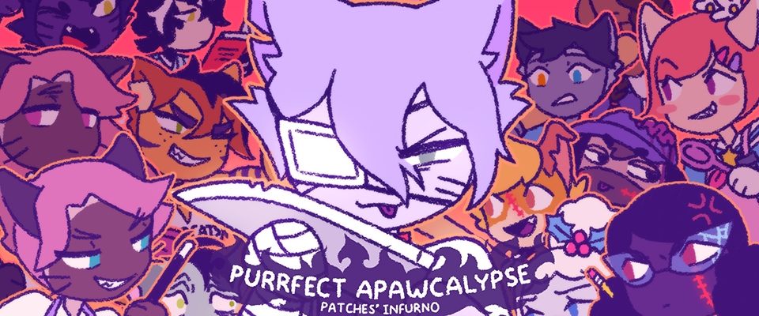

Purrfect Apawcalypse: Patches' Infurno
Patches é arrastado para a escola para o primeiro dia escolar de gato e cachorro! Com Coco e Brownie distraídas com as aulas de economia doméstica, Olive e Angel ocupados com a literatura e Sparky e Ginger ocupados com a educação física, Patches tem o controle da escola... Quase. Tudo o que ele precisa fazer é tirar essa maldita coleira e causar estragos! Ele provará que cães e gatos podem se dar bem ou fará deste o Apocalipse Perfeito?
⬇ Download